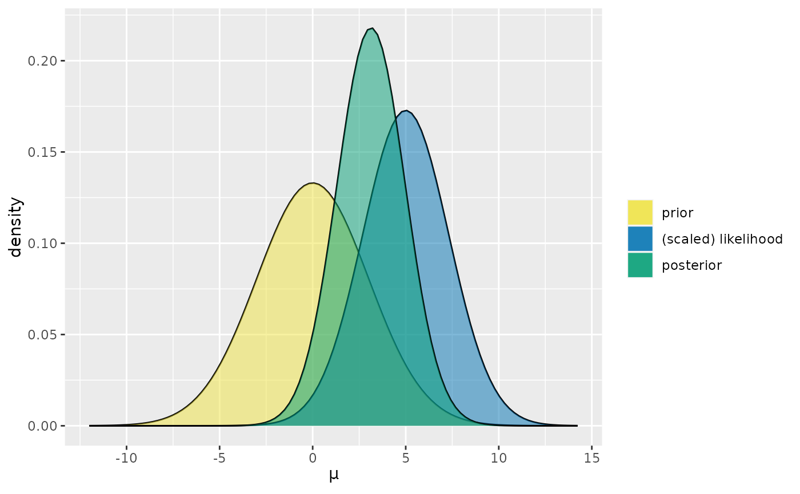
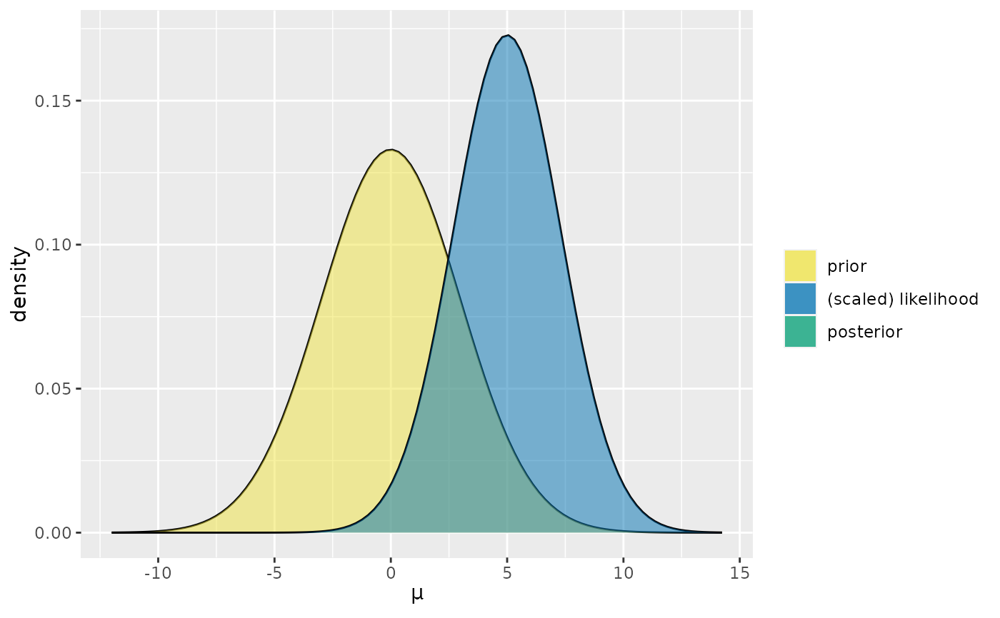

Consider a Normal-Normal Bayesian model for mean parameter \(\mu\) with a N(mean, sd^2) prior on \(\mu\) and a Normal likelihood for the data. Given information on the prior (mean and sd) and data (the sample size n, mean y_bar, and standard deviation sigma), this function produces a plot of any combination of the corresponding prior pdf, scaled likelihood function, and posterior pdf. All three are included by default.
plot_normal_normal(
mean,
sd,
sigma = NULL,
y_bar = NULL,
n = NULL,
prior = TRUE,
likelihood = TRUE,
posterior = TRUE
)mean of the Normal prior
standard deviation of the Normal prior
standard deviation of the data, or likelihood standard deviation
sample mean of the data
sample size of the data
a logical value indicating whether the prior model should be plotted
a logical value indicating whether the scaled likelihood should be plotted
a logical value indicating whether posterior model should be plotted
a ggplot
plot_normal_normal(mean = 0, sd = 3, sigma= 4, y_bar = 5, n = 3)

plot_normal_normal(mean = 0, sd = 3, sigma= 4, y_bar = 5, n = 3, posterior = FALSE)
